�V.広告
�D1986〜1990年の広告 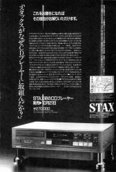
・1986年
前年とは一転し、この年見つけたのはCDプレイヤー「QUATTRO」の広告1点のみ。他は前年のものの再掲載で済ませていたと記憶している。「QUATTRO」はヤマハ製のCDプレイヤーに自社製のD/Aコンバータを合体した製品。
・1987年 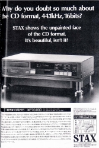 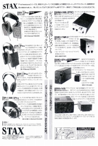 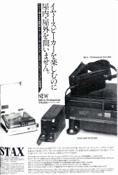 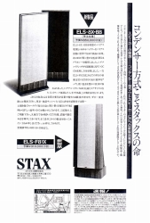 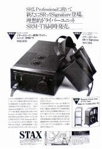
580Vバイアスのプロフェッショナルシリーズの第二次攻勢の時期。ポータブル型ドライバー（SRD-X
Professional）と、SR-Σ（シグマ）
シリーズの追加、SR-Λ(ラムダ）シリーズの新作、SRA-3S以来の真空管使用ドライバーSRM-T1の登場などである。技術的には同社史上最薄の1ミクロン膜を全面にアピールしていた。わざわざ当時の現役機種すべての膜厚を書いたほどだ。しかし1ミクロン膜の機種SR-Σ（シグマ）Professional/SR-Λ（ラムダ）Signatureは1990年代には1.5ミクロン膜に改められた。また不思議なことに超弩級パワーアンプDMA-X1の単独広告は見当たらない。
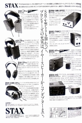 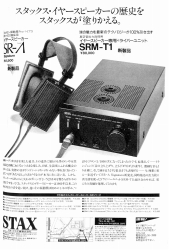 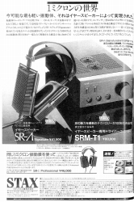
（注）ダミーヘッド録音のCDは「Audio/STAX」ブランドで国内販売も予定されており、一時はカタログでも紹介されていた。しかし、アメリカのレコード会社「STAX」が存在し、先方よりクレームが入ったため、国内での有償販売は中止されたそうである。
・1988年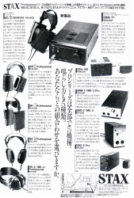
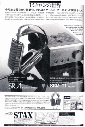
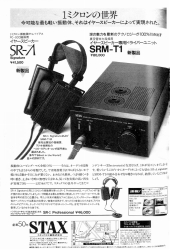
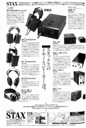
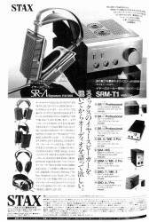
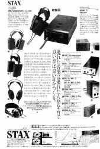 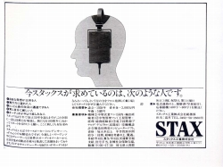
・1989年
比較的好評だったデジタル関連の新製品2点が登場。CDプレイヤー「QUATTRO�U」とDAコンバーターDAC-X1tである。ヘッドホンではSR-α（アルファ）PRO
Excellentが登場した。
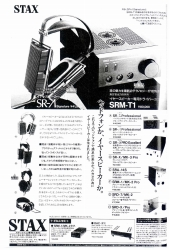 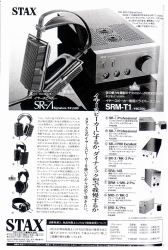 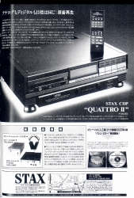 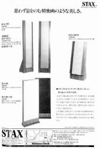 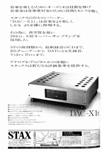
・1990年
イヤ・スピーカー30周年の年。DMA-X1のジュニアモデル、DMA-X2が登場。ジュニアモデルといってもモノラルで1台850,000円の代物である。比較的コンパクトなアンプを純正とするイギリスのクォードと比較して、正直、これほどのアンプでなければいけないのかと、個人的には思っていた。
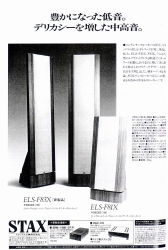 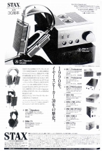 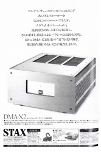 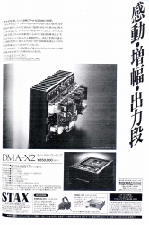 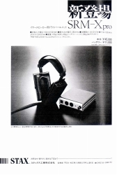
→�E1991〜1995年の広告